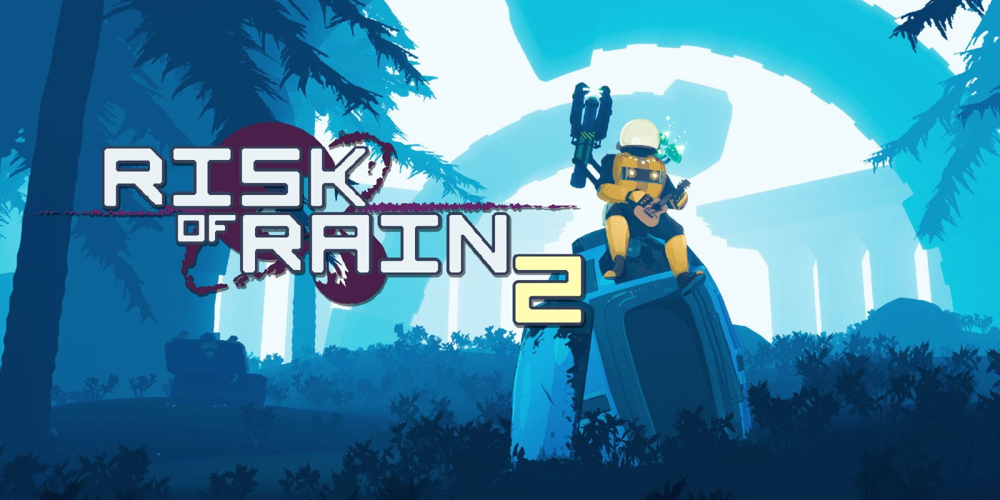

-
Titanfall 2
Titanfall 2 is a first person arena shooter with a low time to kill and an emphisis of high mobility commonly refered to as a Movement Shooter. Titanfall 2 is made by Respawn Entertainment as is a sequal to Titanfall. Titanfall 2 was developed in the Source Engine made by VALVE.
The game has a heavy emphisis on mobility allowing the player to run on walls, jump mid air, and climb walls as well as mech combat allowing the player to call down and pilot a large robot to fight other players who can do the same. The game has 2 main modes a single player campaign telling the story of Rifleman Jack Cooper an aspiring pilot on is journey to help take back the planet of Typhon with the help of the mech BT-7274.
-
The Finals
The Finals is a First Person Arena Shooter with a high time to kill with an emphisis on enviromental Distruction. The Finals is a very uniqe game with a first of its kind consept. In The Finals Players are on a gameshow where whatever team at the end of the game has the most money wins.
There is 4 teams of 3 players, each team is fighting over boxes containing money whatever team captures that box gets the money. The consept is simple but what makes it interesting is other players can steal the box as your are caturing it and every building is destructable leading to situations where players destroy entire buildings to flush out another team to get the advantage on them.
The Game was developed by Embark Studios and released on Dec 7th 2023 to large success. player numbers have slowly declined since release stablizing around 450,000 monthly users on all platforms
-
Risk of Rain 2

Risk of Rain 2 is a Third Person Co-op Rouge-Like Shooter. The game is developed by Hopoo Games and Published by Gearbox. Risk of Rain 2 is a Player VS Enviroment game that can be played with up too four people.
In the game either by yourself or with others to fight your way throught uniqe stages defeating monsters to get money and using that money you can open chests scattered around the stage to get a random item of variying rarities to gain a uniqe effect to help defeat enemies faster. As time goes on the enemies get stronger and more varied, and inorder to move to the next stage you must find a teleporter and defeat the boss gaurding it.
The player can go through as many stages as they want but will have the oportunity every 5 stages to go to the final stage and attempt to defeat the final boss of the game.